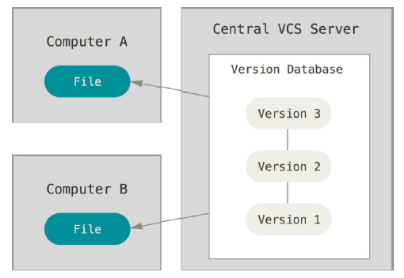
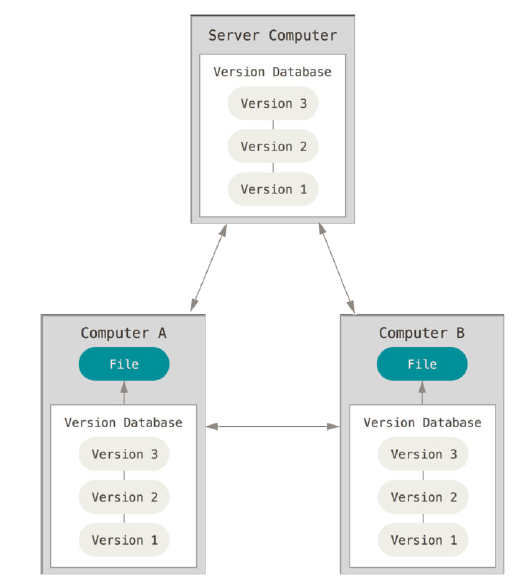
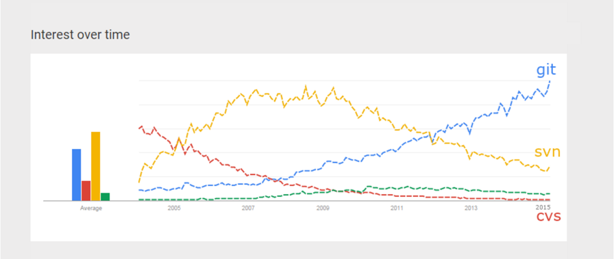
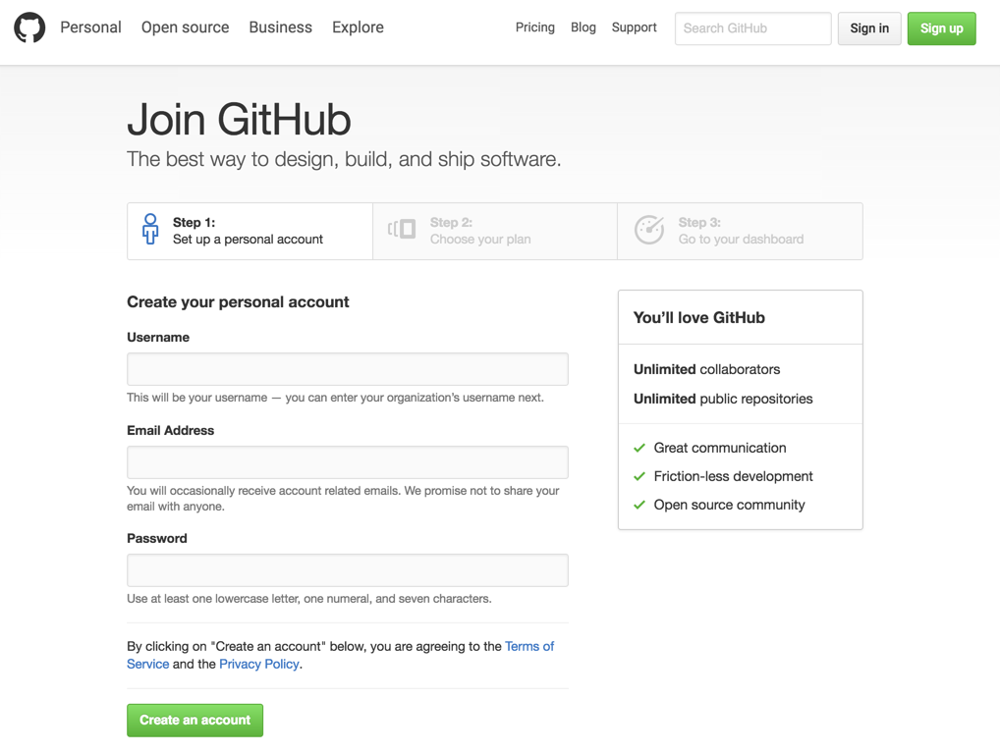
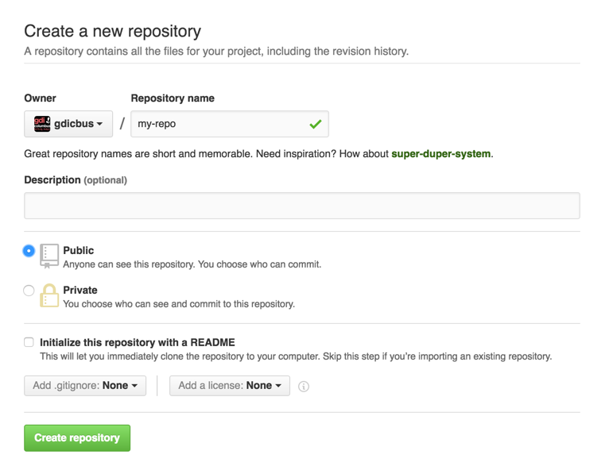

Intro to Git and GitHub
Slides: bit.ly/gdic-git-workshop-2016
Welcome!
Girl Develop It is here to provide affordable and accessible programs to learn software through mentorship and hands-on instruction.
Some "rules"
- We are here for you!
- Every question is important.
- Help each other.
- Have fun!
Welcome!
Tell us about yourself.
- Who are you?
- What do you hope to get out of the class?
- Favorite local restaurant?
What we will cover today
- What is version control and why should we care?
- Basics of Git: the essential commands
- GitHub (or, a little Git between friends)
What is version control?
Version control allows you (and/or your team) to:
Collaborate
Create anything with other people, from academic papers to entire websites and applications.
Track and revert changes
Mistakes happen. Wouldn't it be nice if you could see the changes that have been made and go "back in time" to fix something that went wrong?
You already manage versions of your work!
Do you have files somewhere that look like this?
Resume-September2013.docx
Resume-for-Duke-job.docx
ResumeOLD.docx
ResumeNEW.docx
ResumeREALLYREALLYNEW.docx
Brief History of Version Control
1990s -- CVS (Concurrent Version Systems)
2000s -- SVN (Apache Subversion)
2005 -- Git
Version Control Types
Centralized Version Control
Examples: CVS, SVN
One central server, each person checks out and merges changes to main server.
Distributed Version Control
Examples: Git, Mercurial
Each person has a local copy of the project, which they can then reconcile with the main server.
Centralized Version Control
Examples: CVS, SVN
Distributed Version Control
Examples: Git, Mercurial
Version Control Distribution
 Source: Google TrendsWhy Git?
- Fast! Access information quickly and efficiently.
- Scalable! Enables potentially thousands (millions!) of developers to work on single project.
- Distributed! Everyone has their own local copy of the shared files and the history.
- Local! You don't need a network connection to use it. You only need a remote server if you want to share your code with others (e.g., using GitHub).
- Features such as branches and selectively staging changes.
Install Git

Set Up Git
Set your name and email:
$ git config --global user.name "YOUR_NAME_HERE"
$ git config --global user.email "YOUR_EMAIL_HERE"
View your Git config:
$ git config --list
Your First Local Repository
Go to home directory
cd ~/
OR
cd Users\username
Create a "working directory"
mkdir my-first-repo
cd my-first-repo
Initialize repository with Git
git init
git status
Add files
Create a new hello_world.txt file in your new folder
Check repo status
git status
Tell Git to track our new file
git add hello_world.txt
git status
File is now tracked by Git
Changes and commits
Open hello_world.txt and add some more text
git status
Stage and commit the change
git add hello_world.txt
git commit -m "Initial commit. Add hello world to repository."
What did we just do??
How is this all different than just saving a file?
- When we add a new file, we tell Git to add the file to the repository to be tracked
- When we stage an existigng file (also with the keyword 'add'), we are telling Git to track the current state of our file
- A commit saves changes made to a file, not the file as a whole. The commit will have a 'hash' so we can track which changes were committed when and by whom.
Look at our progress
git log
commit [HASH HERE]
Author: Your name
Date: [DATE HERE]
First commit. Added hello world to repository.
Nobody's Perfect
Undoing local changes
Open hello_world.txt and add some new text
change hello_world.txt
git checkout hello_world.txt
Look at hello_world.txt. Your uncommitted changes are gone.
Nobody's Perfect
Undoing staged changes
Open hello_world.txt and add some new text
git add hello_world.txt
git reset HEAD hello_world.txt
git checkout hello_world.txt
Look at hello_world.txt. Your changes are gone.
Nobody's Perfect
Undoing staged changes
Open hello_world.txt and add some new text
git add hello_world.txt
git commit -m "Change some lines"
git log --pretty=oneline
git revert [HASH]
Look at hello_world.txt. Your changes are gone.
Nobody's Perfect
Remove a file from staging
Create new file my_new_file.txt
git add my_new_file.txt
git reset my_new_file.txt
Nobody's Perfect
Delete a file
Create new file my_other_file.txt
git add my_other_file.txt
Manually delete your file
git rm my_other_file.txt
Branching
- Develop different code on the same base
- Conduct exploratory work without affecting the work on master branch
- Incorporate changes to your master branch only when you are ready
Branching
Create a new branch called version2
git checkout -b version2
Add new lines to hello_world.txt
git add hello_world.txt
git commit -m "Add changes to version 2"
Branching
Switching branches
See all branches. Branch with * is active
git branch
Switch to master and look at hello_world.txt
git checkout master
Switch to version2 and look at hello_world.txt
git checkout version2
Merging
Merge to get changes from one branch into another*
Switch to master and merge changes
git checkout master
git merge version2
*rebase is another option, but will not be covered in this workshop
Merging
Merge conflicts
Change first line in hello_world.txt in master branch
git add hello_world.txt
git commit -m "Change first line in master"
Change first line in hello_world.txt in version2 branch
git checkout version2
# open hello_world.txt and change first line
git add hello_world.txt
git commit -m "Change first line in version2"
Merging
Merge conflicts, cont.
Merge from master into version2
git merge master
You will be notified of a conflict. Go to the file and fix the problem. Then commit your edits.
What is GitHub?
- A website (www.github.com) for hosting your Git repositories.
- Allows people to download, use, and contribute to your projects, and to learn from your code (and vice versa).
- Using GitHub is not required to use Git.
Create a GitHub Account
Sign up for an account: github.com
GitHub
Create your first repository

GitHub
Create your first repository
GitHub
ReadME
While a README isn't a required part of a GitHub repository, it is a very good idea to have one. READMEs are a great place to describe your project or add some documentation such as how to install or use your project. You might want to include contact information - if your project becomes popular people will want to help you out.
GitHub
Get Local Repository of GitHub Repo
cd ../ # Back in root directory
mkdir hello-github
cd hello-github
git init
git remote add origin git@github.com:username/NAME-OF-REPO
git pull origin master
GitHub
Push to GitHub Repo
Edit the README file
git add README
git commit -m "Update README file."
git push origin master
Go look at your GitHub repo online
GitHub
Pulling from remote repository
If you are working with a team, you want to make sure that you have everyone's changes before pushing your changes to the GitHub repo
# Commit local changes
git commit -m "Add latest changes"
# Pull changes other people have made
git pull origin master
# Fix any conflicts (see merge conflicts above) and commit
git commit -m "Fix merge conflicts"
# push local changes to GitHub
git push origin master
Forking
- There are MILLIONS of public repositories on GitHub
- If you want to use or contribute to a repository, you can fork it.
Forking

Forking
Cloning
Clone to get a local repository of your fork
cd ../
git clone https://github.com/username/FORKED-REPO-NAME.git
cd FORKED-REPO-NAME
git remote add upstream https://github.com/original-username/FORKED-REPO-NAME.git
# Assigns the original repository to a remote called "upstream"
git fetch upstream
# Pulls in changes not present in your local repository, without modifying your files
Pull Requests
- After you fork and clone a repository all pushed changes will go to your fork
- These changes will not affect the original repository
- If you would like to get your changes to be incorporated into the original repo, you can submit a pull request
Starting a pull request

Previewing and sending pull request

Managing pull requests
How to manage pull requests is out of the scope of this short workshop, but you can learn more from the GitHub Collaborating Tutorials